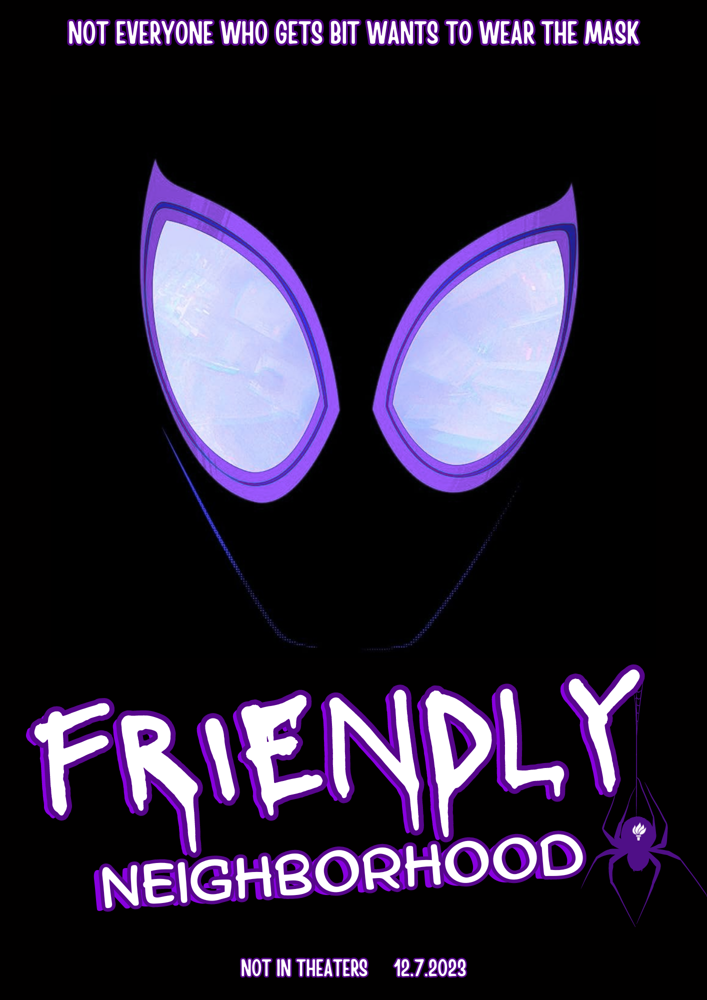

Step into the world of 'Friendly Neighborhood', where the line between ordinary and extraordinary blurs in the life of Pavitr Prabhakar, a 19-year-old NYU Abu Dhabi student. After a fateful encounter with a radioactive spider, Pavitr finds himself juggling the trials of college life with the bewildering onset of superpowers. This compelling narrative takes you through his struggles with academics, his hilarious yet relatable mishaps, and his introspective moments of self-discovery. It's not just about the big heroic gestures; it's about the small, everyday decisions that shape a true hero. Experience a heartwarming tale of growth, responsibility, and the realization that sometimes, being a hero means just being yourself. 'Friendly Neighborhood': A tale of an ordinary student with an extraordinary secret, striving to make a difference one small step at a time.
